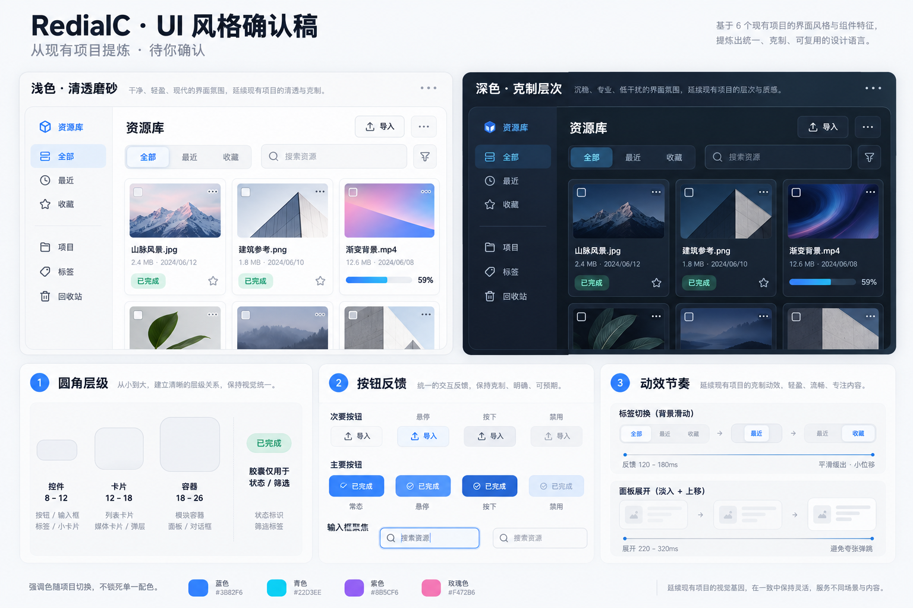

同一空间，逐步披露。
手动翻页默认可用，主动播放后才会轮换。键盘进入时停止，后台隐藏时暂停。
从 Kiseki / Myriad 提炼机制，融入 RC 的紧凑界面语言。这里演示独立重写的轻量效果，按用途选择即可。
细边缘、内高光、低层级阴影负责层次。切到实色或低性能时，文字与边界仍然清晰。
这些是 RC 示例参数，不是对源站的逐像素复刻。
指针经过时响应；触屏、克制档与减少动效时保持静态。
尚未点击
水波只说明点击位置；按钮执行结果由下方文字表达。
等待操作
手动翻页默认可用，主动播放后才会轮换。键盘进入时停止，后台隐藏时暂停。
装饰背景与业务忙碌分开；没有真实任务时，不出现虚假的处理进度。
无 JavaScript 时显示全部条目。低性能与减少动效模式保留手动翻页和清晰的信息。
用原生 disclosure 保留浏览器行为。复杂模态、焦点圈定和窗口管理由目标项目实现。
高频编辑工具用克制档；媒体与数据概览可选增强档；展示档只对低密度首页启用。聚光、倾斜和持续氛围逐项选择。
真液态折射、全屏 WebGL 水波、跨页共享元素、真实音乐与逐字歌词。本示例不模拟它们已经接入。

背景退后，
内容清楚。
这里的低饱和环境色是独立装饰层。只有展示档加上氛围开关，才会产生缓慢变化；可随时关掉。
玻璃不支持、低性能或高对比度模式下保留可读表面。装饰层不拦截鼠标，不承载关键文字。